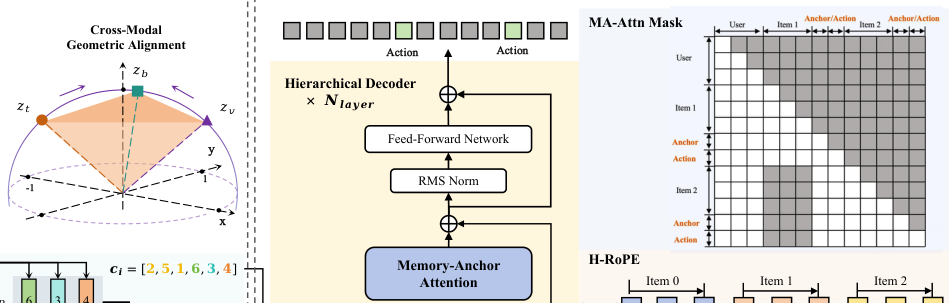

Hi-SAM: A Hierarchical Structure-Aware Multi-modal Framework for Large-Scale Recommendation (分层结构感知的多模态大规模推荐框架)
- 会议/期刊: KDD 2026 (ADS Track)
- 作者与机构: Pingjun Pan, Tingting Zhou, Peiyao Lu, Tingting Fei, Hongxiang Chen (通讯), Chuanjiang Luo — 网易云音乐
- 推荐链路定位: 精排（语义ID序列建模 + 生成式打分）
- 研究方向: 生成式推荐与离散语义ID / 序列推荐
- 论文原文: https://arxiv.org/abs/2602.11799v2
- 开源代码: 暂未开源
TL;DR (1分钟核心速览)
语义ID推荐存在两大痛点：RQ-VAE 类分词器不区分跨模态共识与模态特有细节，导致冗余或模态坍缩；原生 Transformer 把"用户-物品-属性token"压平成单一流，物品展开成多 token 后序列变长、噪声累积、注意力偏向局部细节。Hi-SAM 用解耦语义分词器 DST（球面几何对齐 + 共享/模态残差粗到细量化 + 互信息最小化）产出高质量语义ID，再用分层记忆锚点 Transformer HMAT（H-RoPE 正交拆分物品间/物品内位置 + Anchor Token 压缩历史）恢复层级结构。工业数据集 GAUC 0.6410（较 QARM +5.6%），冷启动 GAUC 0.5835（+6.5%），线上响应率 +6.55%、延迟 -35%。
Background & Motivation (背景与核心矛盾)
- 主流范式: 语义ID推荐 = 多模态量化生成离散码（RQ-VAE 系）+ 大 Transformer 序列建模（HSTU/Wukong/MTGR），以离散 token 提升泛化、缓解稀疏ID冷启动。
- 前人局限: ① 分词层面，独立量化（PSRQ）造成跨模态语义冗余、融合量化（QARM 早融合）造成主导模态淹没细节的模态坍缩；② 架构层面，物品展开为多 token 后，跨物品与物品内 token 转移距离同为 1，物品边界被抹平，注意力过度聚焦细粒度属性 token 而丢失整体语义。
- 核心洞察 (Key Insight): 推荐数据天然是三层层级（用户交互 → 物品 → 属性 token），而现有骨干是为扁平序列设计的；"更好的离散语义ID + 更适配的架构"才能释放多模态潜力。
- 本文切入点: 在分词与架构两端同时做结构化改造——分词端显式解耦共识/细节，架构端用位置编码与注意力掩码把层级"写回"模型。
Method (核心方法设计)
1. 整体框架 (Overall Architecture)
两阶段流水线：第一阶段 DST 将每个物品的图文行为多模态特征经 CGA 球面对齐后，由 DMRQ 粗到细量化成 6 个离散语义 token（3 共享 + 每模态 1 个特有）；第二阶段 HMAT 把用户画像、物品 token 序列、[ANC] 锚点与行为 token 拼成统一流，用 H-RoPE 注入层级坐标、用 MA-Attn 结构化掩码约束信息流，最终在行为 token 位置做 next-action 预测。训练采用 SFT（可选语义预训练 + SFT 渐进式），DST 全程冻结；推理用 One-Pass 并行打分 + 锚点级 KV Cache 无损驱逐。
flowchart TD
A["多模态原始特征 图/文/行为"] --> B["CGA 球面几何对齐"]
B --> C["DMRQ 共享码本 + 模态残差码本"]
C --> D["离散语义ID序列 + ANC锚点"]
D --> E["HMAT: H-RoPE + MA-Attn"]
E --> F["行为token打分 / 并行排序"]
2. 关键设计拆解 (Key Designs)
-
解耦模态残差量化 DMRQ（分词端核心）：痛点是对齐后多模态仍纠缠，早融合坍缩、独立量化冗余。做法：先聚合全局表示 \(f=\Phi_{fuse}(Z)\)用 RQ-VAE 量化出共享码\(\hat z_{sh}\)，残差\(r_{N_{sh}}\)经多头投影展开为\(H\)子空间，以原始对齐特征\(z_j\)作语义探针做注意力聚合得\(z_{sp}^{(j)}\)再量化到模态专属码本；用 vCLUB 互信息最小化\(\mathcal{L}_{MI}=\sum_j \hat I(\hat z_{sh}; z_{sp}^{(j)})\)强制二者统计独立。直觉：共享码本吸收"复古外套"这类跨模态共识，残差码本只保留各模态独有细节，加法重构\(\|z_j-(\hat z_{sh}+\hat z_{sp}^{(j)})\|^2\) 保证互补不重叠。
-
分层 RoPE + 记忆锚点注意力 HMAT（架构端核心）：痛点是把物品多 token 压平后层级丢失、长序列噪声放大。H-RoPE 将维度对半拆为正交子空间，前 \(d/2\)维编码物品序\(m\)（基频\(B_{inter}=10^4\)，低频利于长程外推），后\(d/2\)维编码属性位\(n\)（\(B_{intra}=100\)，高频放大局部敏感），注意力分数严格解耦为\(\langle q_{inter},k_{inter}e^{-i\Delta m\Theta_{inter}}\rangle+\langle q_{intra},k_{intra}e^{-i\Delta n\Theta_{intra}}\rangle\)。MA-Attn 用掩码\(M_{q,k}\)规定三条通路：用户画像全局可见、当前物品内全可见、历史物品仅可见其 [ANC] 锚点。直觉：仿人类选择性记忆，历史只留压缩概念，既滤噪又把历史注意力复杂度从\(O((K\!\cdot\!L_i)^2)\)降到\(\sim O(K^2)\)。
-
训练目标、负采样与推理效率：总损失 \(\mathcal{L}_{SFT}=-\sum_{j\in I_a}\log P(T_j|T_{<j},M;\Theta)\)，分词端\(\mathcal{L}_{DMRQ}=\sum_j\|z_j-(\hat z_{sh}+\hat z_{sp}^{(j)})\|^2+\beta\mathcal{L}_{vq}+\lambda\mathcal{L}_{MI}\)；全库 softmax 式 next-token 预测，免负采样。推理侧 One-Pass 并行打分时把候选 token 的物品序坐标强制重置为\(L_{valid}+1\) 消除位置偏置；MA-Attn 保证历史细粒度 token 永不被后续访问，故可物理驱逐其 KV，仅留锚点并维护逻辑位置映射，实现无损压缩。
Experimental Setup & Evaluation Protocol (实验设置与评估协议)
- 数据集与预处理:
| 数据集 | #Users | #Items | #Interactions | 稀疏度/密度 | 特征/场景说明 |
|---|---|---|---|---|---|
| Book (Amazon 2023) | 0.78M | 0.49M | 9.5M | 平均序列 12.66 | 标题/类目/品牌/封面图 |
| Movies & TV (Amazon 2023) | 657.2K | 197.9K | 7.4M | 平均序列 11.25 | 同上 |
| Industrial (交友平台) | 6.33M | 1.38M | 521M | 平均序列 82.30 | 头像/签名/聊天，曝光-点击-回复 |
- 数据划分与防穿越: 按时间排序，前 90% 训练、后 10% 测试；评分 >3 视为正反馈；交互 <10 条的用户划为冷启动子集单独评测。
- 排名评测协议: AUC（全局排序）+ GAUC（用户内排序），并在全测试集与冷启动子集分别报告；线上用 6% 流量、两个月的 A/B（Response Rate / Response Depth）。
- 对比基线与超参: 稀疏ID系 WuKong / HSTU / MTGR，多模态语义ID系 QARM / PSRQ+MCCA；统一特征集与算力（4 层 Transformer、隐层 512、序列长 300、语义 token 维度 256、BLIP-2 编码），Hi-SAM-Large 为 12 层。
Key Experimental Results (实验关键数据)
1. 主实验对比 (Main Results)
| Method | Book GAUC | Movies GAUC | Industrial GAUC | Industrial Cold GAUC |
|---|---|---|---|---|
| HSTU | 0.6440 | 0.7076 | 0.6087 | 0.5304 |
| MTGR | 0.6443 | 0.7077 | 0.6125 | 0.5357 |
| QARM | 0.6450 | 0.7093 | 0.6068 | 0.5477 |
| PSRQ+MCCA | 0.6501 | 0.7095 | 0.6131 | 0.5571 |
| Hi-SAM-Small | 0.6588 | 0.7254 | 0.6410 | 0.5835 |
| Hi-SAM-Large | 0.6634 | 0.7266 | 0.6432 | 0.5913 |
| w/ PT+SFT | 0.6660 | 0.7302 | 0.6443 | 0.5963 |
| Improv.% (vs 最强基线) | +2.44% | +2.92% | +5.09% | +7.04% |
2. 消融实验 (Ablation Study)
| Variant | AUC | GAUC | Cold AUC | Cold GAUC |
|---|---|---|---|---|
| Hi-SAM (Full) | 0.7293 | 0.6410 | 0.7886 | 0.5835 |
| w/o CGA | 0.6813 | 0.6166 | 0.7327 | 0.5465 |
| w/o DMRQ | 0.7163 | 0.6347 | 0.7855 | 0.5822 |
| w 1D-RoPE | 0.7260 | 0.6402 | 0.7850 | 0.5823 |
| w/o MA-Attn | 0.7201 | 0.6343 | 0.7845 | 0.5688 |
| Tokenizer 换 PSRQ | 0.6703 | 0.6084 | 0.7443 | 0.5446 |
| Backbone 换 Qwen2.5 | 0.6909 | 0.6170 | 0.7549 | 0.5486 |
3. 关键实验发现 (Key Findings)
- 分词器是最大增益源：同一 HSTU 骨干下，DST 较 PSRQ 冷启动 AUC 提升 +4.77%（0.7798 vs 0.7443），而换骨干（Qwen2.5→HMAT）仅 +1.62% GAUC——说明语义ID质量是瓶颈，架构是放大器。
- 对齐不可省：去掉 CGA 直接拼接使 GAUC 暴跌 3.81%（0.6410→0.6166），冷启动 GAUC 掉 3.70%，验证球面几何对齐是量化前的必要初始化；层间相似度热图显示 DMRQ 深层 L3/L4/L5 分别与行为/图像/文本强对角相关，证明解耦确实生效。
- 锚点压缩兼顾精度与效率：去 MA-Attn 冷启动 GAUC 掉 1.47%（0.5835→0.5688），而保留掩码后历史 KV 可无损驱逐，线上同等算力下响应时间降 35%；线上 PT+SFT 变体冷启动响应率 +16.62%，印证多模态语义对稀疏用户的补偿价值。
Highlights & Limitations (亮点、对比与审稿批判)
- 与代表作对比 (vs. Prior Work): 相比 QARM 的早融合统一编码，DMRQ 用"共享码本 + 残差模态码本 + MI 约束"从结构上防坍缩；相比 PSRQ+MCCA 的独立量化，它显式建模跨模态共识；相比 HSTU/MTGR 的扁平序列，HMAT 首次把"物品-属性"层级写进 RoPE 与注意力掩码，且不增加算力反而降延迟。
- 可迁移亮点: ① H-RoPE 的正交双子空间 + 差异化基频设计，可直接迁移到任何"多 token 物品"的生成式推荐骨干；② 锚点掩码带来的无损 KV 驱逐 + 候选位置重对齐，是生成式召回/精排落地的通用工程技巧。
- 审稿级局限批判: ① 仅报告 AUC/GAUC 与业务指标，缺少 NDCG/HR 等 top-K 排序指标与显著性检验；② DST 依赖 BLIP-2 (2.7B) 离线提特征，分词器质量受预训练编码器上限约束，且 MI 权重 \(\lambda\)、码本层数\(N_{sh}\) 的敏感性未系统分析；③ 线上仅对比自家 DLRM 基线，未与工业级语义ID系统横向 A/B。
Rating (四维评分)
- 方法创新性 (Novelty): ⭐⭐⭐⭐ （核心机制与方法设计具备明确创新性，理论与实验动机支撑充分）
- 评估协议与实验扎实度 (Protocol & Experiments): ⭐⭐⭐⭐ （主流公开数据集评测完整，包含多基线对比与消融实验验证）
- 写作与数学规范度 (Clarity & Rigor): ⭐⭐⭐⭐⭐ （问题形式化定义清晰，核心模块数学推导与架构阐述严谨易读）
- 工业落地与复现价值 (Industrial & Practical Value): ⭐⭐⭐⭐⭐ （兼顾推荐效果增益与训练/推理效率，具备实际场景迁移参考价值）